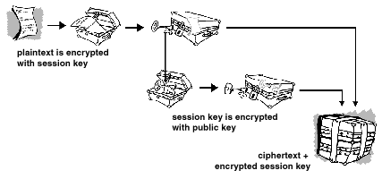

Tor and Pgp
Evan Misshula
emisshula@jjay.cuny.edu
Evan Misshula
- GC Digital Fellow
- Free Software
- Open Science
- Open Access
- Reproducibility
- Criminal Justice
- Public Health
- Policing
- Social Mobility
Libraries
- Political treatises
- Alternative histories
- Information about organizing
- Satire
- Information about weapons
National Security Letters
Why do you need Pgp?
- Pgp treatise
- personal, private communications
- laws selectively enforced
- drugs
- parole violations
- evidence of being gay
- affairs/divorce
Political activities mistaken for terrorism
Envelopes not postcards
- encryption not invincible
- more difficult
- government can get it if it's important
How Pgp works
- Strong Cryptography
- Public and Private Keys
- Encryption
- Decryption
- Certificates
- Revocation
What is cryptography?

Strong cryptography
There are two kinds of cryptography in this world: cryptography that will stop your kid sister from reading your files, and cryptography that will stop major governments from reading your files. This book is about the latter.
–Bruce Schneier, Applied Cryptography: Protocols, Algorithms, and Source Code in C
Public and Private Keys

Encryption
Decryption

Certificates
- A digital certificate is information included with a person's public key that helps verify that a key is genuine or valid.
- A digital certificate is data that functions much like a physical certificate.
- Don't trust authorities!! Regin attack
Web of Trust
- Trust is in the eye of the beholder
- More information is better.
- Cumulative trust model.
Ways to establish trust
- direct
- chain of trust
- multiple chains
Tor
- Tor is routing network designed to protect the origin of communications
Distributed anonymous network

Picking a path

Another site, another path

How do we make it better?
Use encryption for private communication.
Insist other fiduciaries protect our data.
Get off Gmail and MSFT
Use FREE software
- Evan Misshula
- @emisshula
- http://evanmisshula.github.io/